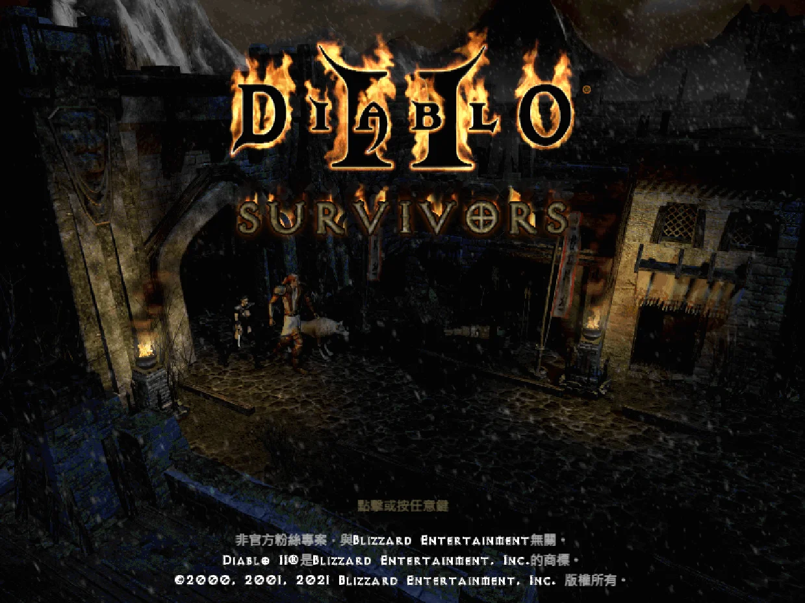
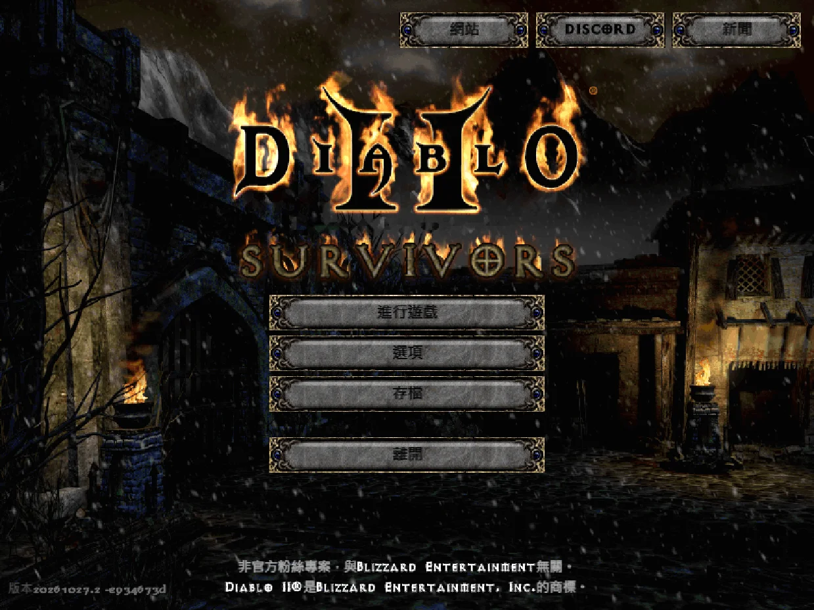
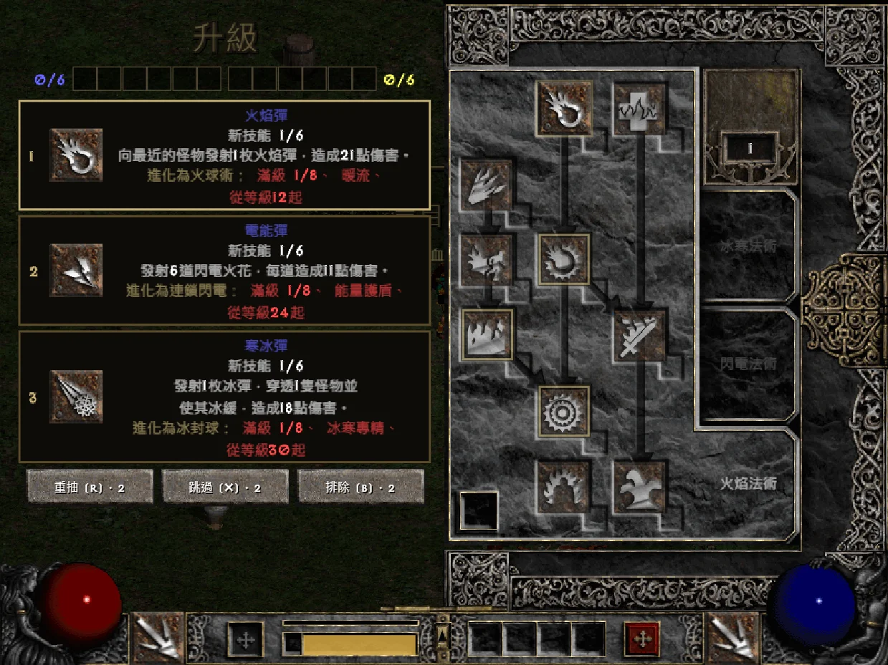
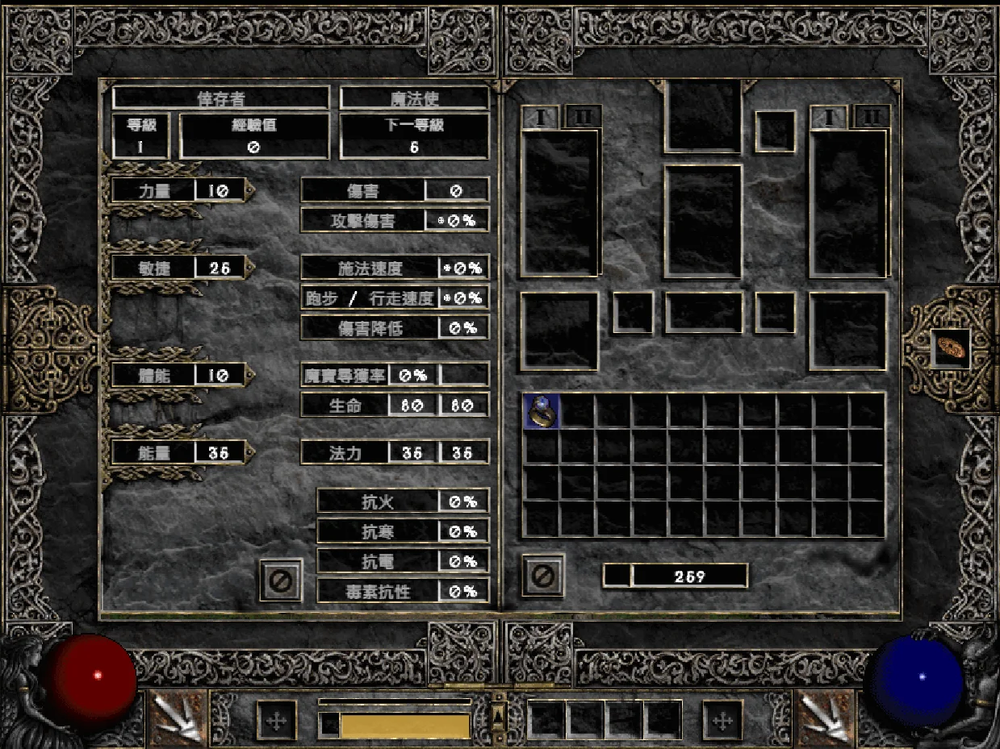
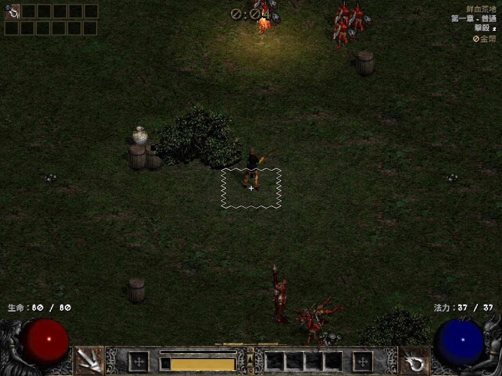

D2 Survivors
原作：framara
免費的非官方粉絲遊戲，以《暗黑破壞神 II》為舞台的倖存者類遊戲。本翻譯專案與原作者無關，遊戲本身的問題請到官方管道回報。
非官方玩家翻譯
把 Diablo 2 Survivors（D2 Survivors／暗黑2倖存者、暗黑破壞神2倖存者）遊戲本身翻成繁體中文。不是中文攻略，而是介面、技能、物品、怪物、升級卡全部變成中文，用語以《暗黑破壞神 II：獄火重生》官方譯名為準。啟動器一鍵安裝、自動更新，隨時可以還原原版。
官方網頁版已經移除，翻譯只支援桌面版（Windows 啟動器）。
玩過網頁版的話，請用當初玩網頁版的同一個瀏覽器打開「網頁版存檔轉移」（官方頁面，英文），把存檔下載成 .txt，再到桌面版主選單的「存檔」（SAVES）→「開啟存檔」（Open a save file）選這個檔案。





遊戲畫面：D2 Survivors（framara），使用玩家自己的 Diablo II 檔案
這個專案只提供翻譯，不含任何遊戲檔案。開始之前，請先從下面的官方管道取得 D2 Survivors 和《暗黑破壞神 II》。
原作：framara
免費的非官方粉絲遊戲，以《暗黑破壞神 II》為舞台的倖存者類遊戲。本翻譯專案與原作者無關，遊戲本身的問題請到官方管道回報。
Blizzard Entertainment
D2 Survivors 會讀取你電腦上的《暗黑破壞神 II》美術與音效，所以需要自己擁有《暗黑破壞神 II：獄火重生》，或《暗黑破壞神 II》＋《毀滅之王》（1.14 版）。
D2 Survivors 的官方安裝檔，不是本專案的檔案
中文化是套在遊戲本體上的，所以要先裝好 D2 Survivors。遊戲本身不含暴雪的檔案，會讀取你電腦上自己的《暗黑破壞神 II》或《暗黑破壞神 II：獄火重生》檔案來玩（需要什麼版本見上面《暗黑破壞神 II》那一欄）。
中文化（我們的啟動器）目前只支援 Windows。Mac 和 Linux 版可以玩，但只有原版的英文和韓文，沒有翻譯。官方把 Windows 和 Linux 版標為測試版（beta）。系統需求和各平台的安裝方式見官方下載頁（英文）。
譯名參考：技能、物品、怪物、區域等名稱沿用《暗黑破壞神 II：獄火重生》官方繁體中文譯名；其餘文字由本專案翻譯。
中文（繁體）、中文（簡體）、日文、德文、法文、俄文和波蘭文都已正式推出，可以直接選。
翻譯、語言和啟動器的更新。啟動器每次開啟都會拿到最新的翻譯，不用重新下載。
以下是 D2 Survivors 作者寫的更新說明，我們只負責翻譯。
以下是 D2 Survivors 作者寫的更新說明，我們只負責翻譯。
以下是 D2 Survivors 作者寫的更新說明，我們只負責翻譯。
不需要動手改任何遊戲檔案，全部交給啟動器。遊戲要先關掉。啟動器的畫面會用你選的語言顯示。
下載官方的 Windows 安裝檔（D2-Survivors-Setup-win-x64.exe）並執行；安裝檔沒有簽章，SmartScreen 跳出警告時按「其他資訊」→「仍要執行」。照遊戲的設定畫面指定《暗黑破壞神 II》的位置，確認能正常進入遊戲。其他平台和需求見遊戲本體下載。
下載 d2s-launcher.exe，放在任何資料夾都可以，不需要安裝。
第一次開啟會先出現語言畫面，每種語言都用它自己的文字寫。點你的語言、按「→」，啟動器的畫面和遊戲的翻譯都會用這個語言。
①「遊戲」：找到 D2 Survivors（預設在 %LOCALAPPDATA%\Programs\D2 Survivors，裝在別處就按「選擇資料夾…」）。②「Diablo II」：找你電腦上的《暗黑破壞神 II：獄火重生》或經典版，找不到也可以按「略過」。③「完成」：可以按「在桌面建立捷徑」，再按「啟動遊戲」。第一次會下載翻譯，並自動備份原版 app.asar。
預設每次啟動都會抓最新的翻譯（「設定」裡的「啟動時自動更新翻譯」），遊戲更新後也會自動重新套上。想換語言，在主畫面的「遊戲語言」換就好。
app.asar 就會換回原本的檔案。%LOCALAPPDATA%\D2SurvivorsLauncher 資料夾。想自己做捷徑的話，把下面這行設成捷徑的目標，按兩下就直接用指定語言開遊戲，不會出現啟動器視窗。（啟動器的「在桌面建立捷徑」會開視窗並直接啟動遊戲。）
d2s-launcher.exe --launch --lang zh-TW--launch--play--lang <id>--no-update--update--restore--self-update--status不是。這是玩家自製的非官方翻譯，與 D2 Survivors 開發者及 Blizzard Entertainment 都沒有關係。
程式的部分是。啟動器、網站和工具的原始碼都放在 GitHub，用 MIT 授權。啟動器由 GitHub Actions 從公開的原始碼自動編譯（編譯紀錄），每個 Release 都附 d2s-launcher.exe.sha256，可以自己核對。
翻譯資料（字典）目前沒有開放授權，保留所有權利，詳見 dict/LICENSE。字典裡沿用的官方譯名屬於 Blizzard Entertainment。
中文化目前不行。啟動器只有 Windows 版；官方網頁版已經移除，網頁書籤也跟著停止。
遊戲本體官方有 Mac（Apple 晶片）和 Linux（x64）版，可以玩原版（英文／韓文），但沒有翻譯。手機原本只能玩網頁版，網頁版移除後就沒辦法玩了。
不會。啟動器只替換遊戲資料夾裡的 resources\app.asar，存檔放在別的地方，不會被讀取或修改。替換前會先備份原版。
可以。官方留了一個網頁版存檔轉移頁面（只有英文和韓文），會從瀏覽器裡找出網頁版的存檔，讓你下載成 .txt 檔。
一定要用當初玩網頁版的同一個瀏覽器（同一個使用者設定檔）打開這頁，存檔才找得到；換別的瀏覽器或用無痕視窗都找不到。
下載後打開桌面版，在主選單選「存檔」（SAVES）→「開啟存檔」（Open a save file），選剛下載的 .txt 就匯入了。專家級（Hardcore）的存檔跟遊戲裡一樣不能轉移。
遊戲更新會換掉 app.asar，翻譯會暫時消失。照常從啟動器或捷徑開遊戲就會重新套上。
如果新版本改動太大、修改規則對不上，啟動器不會硬改檔案，而是先用原版開遊戲，並顯示「遊戲剛更新，翻譯修正中」。翻譯修好後，下次開啟就會自動套回去，什麼都不用做。
翻譯借用遊戲內建的韓文語言位置，所以套用中文後，選單裡的韓文會顯示成「繁體中文」。想玩韓文版，在啟動器選「한국어 (원본)」再啟動。
遊戲裡的文字都已翻譯，也在遊戲裡檢查過沒有漏翻。如果看到英文，通常是遊戲剛更新、加了新的文字；翻譯會在之後的更新補上，啟動器會自動下載。一直沒補上的話，歡迎回報。
選翻譯語言時，遊戲會把紀錄標成 patched；要正常上榜，請在啟動器的「遊戲語言」選 English。
啟動器沒有程式碼簽章（要每年付費購買），在下載的人還不多之前，Windows SmartScreen 都會跳出這個警告。
按「其他資訊」，再按「仍要執行」就可以了，之後不會再問。請只從本站或 GitHub Releases 下載；每個 Release 都附有 d2s-launcher.exe.sha256，可以用 certutil -hashfile d2s-launcher.exe SHA256 核對。
瀏覽器下載時如果說這個檔案不常被下載，在下載清單的選單裡選「保留」。
目前不行。遊戲本身只允許英文字母和韓文作為角色名稱。
錯字、漏譯、啟動器的問題，請到中文化社群 Discord 回報，那裡也會公告最新消息。
翻譯錯誤和程式問題也可以到 GitHub Issues 回報。
遊戲本身的問題（跟翻譯無關的）請到 D2 Survivors 遊戲官方 Discord（英文）回報。
歡迎！所有語言都已正式推出，但翻譯總有可以更好的地方。看到不自然的說法或錯字，特別歡迎母語玩家告訴我們。請到這裡聯絡我們。